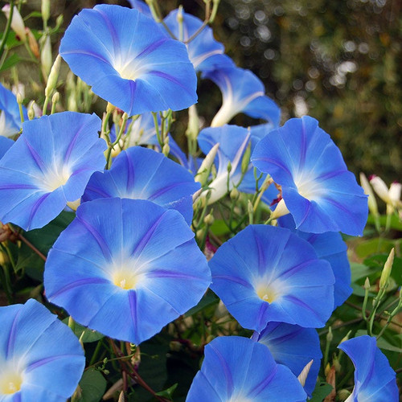
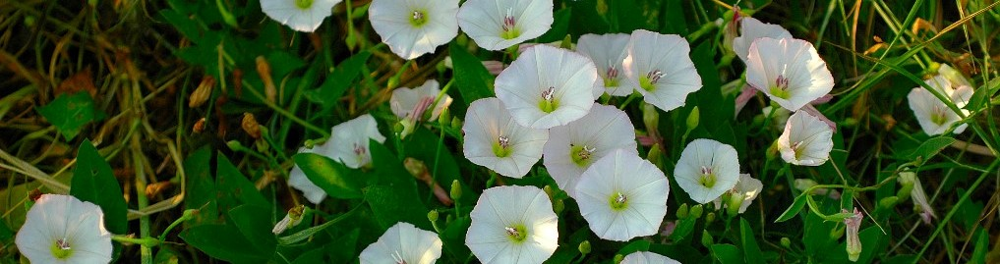

Vilucchio
caratteristiche e utilizzi
Cura del Vilucchio
Spesso è una pianta invasiva, in quanto può risultare infestante verso altre specie.Il Convolvolo infatti può insidiarsi su altre piante rendendo difficile il loro sviluppo. Questo accade anche nei giardini, nel caso non sia desiderato. Per quanto riguarda le necessità ambientali, il Convolvolo preferisce luoghi soleggiati ed esposizioni alla luce molto lunghe. Non ha particolare bisogno di acqua, infatti sopporta molto bene la siccità. L’importante è che il terreno sia ben drenato, meglio se con presenza di sabbia per favorire il deflusso. Questa pianta, infatti, come molte altre soffre i ristagni d’acqua. Ha una crescita molto veloce e questo a volte può risultare scomodo, specialmente se coltivato sul balcone. E’ bene quindi procedere con delle potature.
Utilizzi del Vilucchio
Il Vilucchio contiene glucosidi di resina, tannini, flavonoidi, amico e zuccheri cristallizzabili ed ha proprietà diuretiche e lassative, per questo motivo è generalmente utilizzato in casi di stipsi cronica ed è in grado di purificare il fegato e l'intestino. Grazie alle sue foglie è possibile ricavare da esse un buon infuso. alle foglie secche invece, si può ottere una purga efficace, unendole al miele caldo e assumendole direttamente con il cucchiaino. Tra gli altri usi del vilucchio comune troviamo la possibilità di fare un decotto sempre utilizzando le foglie oppure creare una tintura madre fai da te.
Il Vilucchio in Cucina
In antichità venne anche mangiato, cucinando le sue foglie con altre verdure.
Il Vilucchio in Erboristeria
In ultimo ci occupiamo di spiegare le proprietà curative del vilucchio comune; esso infatti è capace di provocare all'organismo umano effetti diuretici e lassativi in grado di purificare il fegato e l'intestino. Poiché distrugge i germi, viene adoperato come prodotto sterelizzante, ed è inoltre usato come antipiretico per far calare la febbre.
- Nome scientifico: Convolvulus arvensis.
- Famiglia: Convolvuceae.
- Terreno ideale: Predilige terreni molto ben drenati, non necessariamente ricchi, che non trattengano a lungo l'umidità.
- pH ideale: Neutro o leggermente acido.
- Preparazione del terreno: Esposto in pieno sole ma ancora più importante è assicurargli un terreno ben drenato.
- Concimazione: Devono essere moderate.
- Quando seminare: Primavera.
